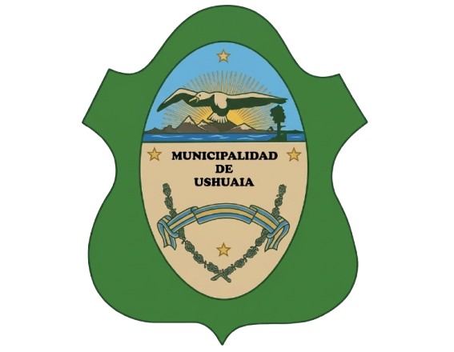

El Museo del Fin del Mundo conserva y muestra parte de la historia y la cultura de Tierra del Fuego. Su sede fundacional se encuentra en Avenida Maipú 173, en un edificio que también funcionó durante décadas como sede del Banco Nación.

Funciona en el antiguo edificio del presidio de Ushuaia. Sus salas permiten conocer la historia marítima de la región, las expediciones antárticas y distintos aspectos de la historia del antiguo presidio.
También conocido como Casa Pena, funciona en una antigua vivienda de madera y chapa. El museo está dedicado a conservar y mostrar recuerdos, objetos y relatos relacionados con los antiguos pobladores y pioneros de Ushuaia.
El parque nacional Tierra del Fuego es un parque nacional de Argentina situado en la provincia de Tierra del Fuego, Antártida e Islas del Atlántico Sur,en el extremo suroeste de la porción argentina de la isla Grande de Tierra del Fuego ,a unos 12 km al oeste de la ciudad de Ushuaia
A 18 km de Ushuaia,Unos 9 km en total ida y vuelta,saliendo por la Ruta Nacional N°3 con un tiempo estimado de 3 a 6 horas según el ritmo. El tono verde esmeralda o turquesa se debe a la "harina de roca"proveniente del deshielo del Glaciar Ojo del Albino.
emblema natural ubicado a solo 7 kilómetros del centro de Ushuaia, Es un glaciar de circo con forma de anfiteatro, considerado hoy en día un remanente de un glaciar mucho más antiguo. De él nace el arroyo Buena Esperanza, la principal fuente de agua potable de la ciudad de Ushuaia.